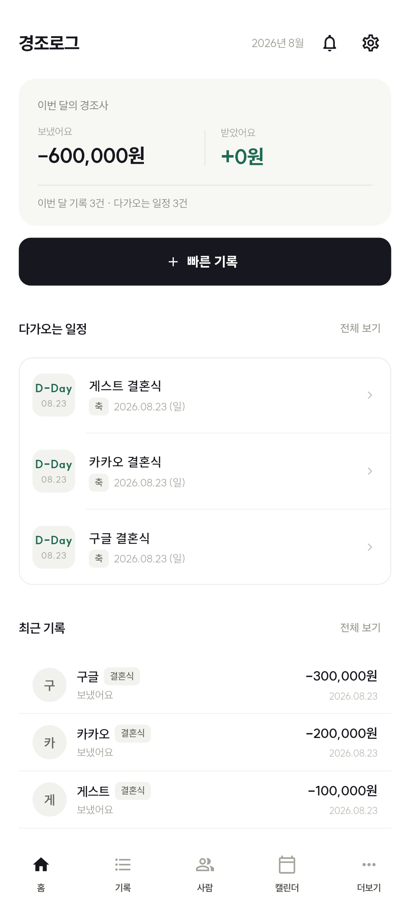

보내고 받은 금액을 한눈에
이름, 관계, 날짜, 금액과 메모를 남기고 월별 합계와 사람별 내역을 확인하세요. 내 경조사에 받은 기록도 연결할 수 있어요.
마음을 기억하는 작은 습관
보내고 받은 경조금부터 다가오는 일정까지.
흩어져 있던 기록을 경조로그에 모아보세요.
Android 앱 · Google Play 출시 준비 중

경조로그로 할 수 있는 일
이름, 관계, 날짜, 금액과 메모를 남기고 월별 합계와 사람별 내역을 확인하세요. 내 경조사에 받은 기록도 연결할 수 있어요.
캘린더에서 경조사 일정을 관리하고 알림을 설정하세요. 빠른 기록에서 기존 일정과 연결해 정리할 수 있어요.
엑셀·CSV, 텍스트, 사진 속 기록을 가져오세요. 인식 결과를 확인하고 수정한 뒤 저장할 수 있어요.
나에게 맞는 시작
게스트로 시작하거나 Google·카카오 계정으로 로그인할 수 있어요. 계정을 연결하면 다른 기기에서도 저장된 기록을 불러올 수 있습니다.
게스트 기록도 익명 계정으로 서버에 저장될 수 있습니다. 앱을 삭제하거나 기기를 바꾸기 전에는 계정 연결과 동기화 상태를 확인해 주세요.
데이터를 어떻게 관리하나요? →도움이 필요하신가요?
오류 제보와 기능 제안, 개인정보 관련 요청을 이메일로 받고 있습니다.
whdgus9280@gmail.com ↗